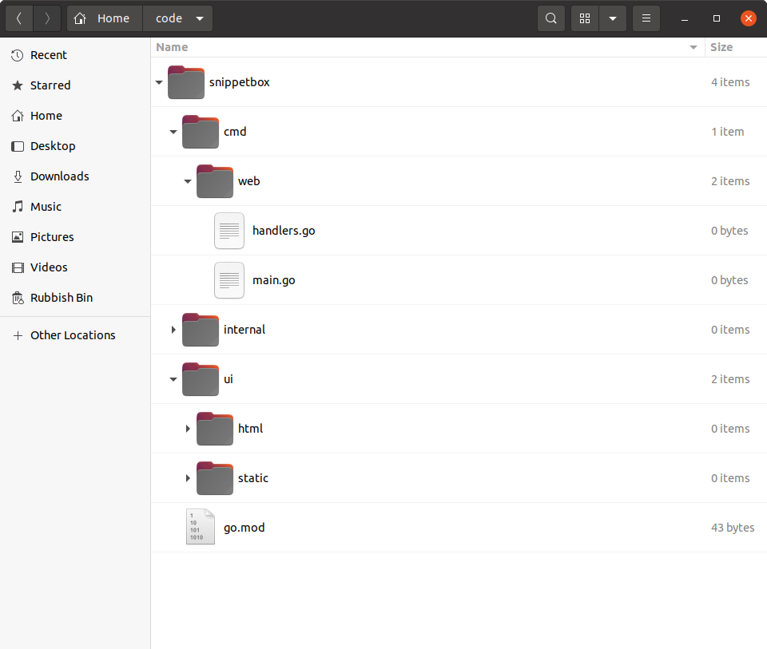

ساختار و سازماندهی پروژه
قبل از اینکه کد بیشتری به فایل main.go خود اضافه کنیم، زمان خوبی است که فکر کنیم چگونه این پروژه را سازماندهی و ساختاردهی کنیم.
مهم است از ابتدا توضیح دهم که هیچ روش درست واحدی — یا حتی توصیه شده — برای ساختاردهی برنامههای وب در Go وجود ندارد. و این هم خوب است و هم بد. به این معنی است که شما آزادی و انعطافپذیری در نحوه سازماندهی کد خود دارید، اما همچنین آسان است که در تلاش برای تصمیمگیری در مورد اینکه بهترین ساختار باید چه باشد، در یک چاه عدم اطمینان گیر کنید.
همانطور که با Go تجربه کسب میکنید، احساسی برای الگوهایی که در موقعیتهای مختلف برای شما خوب کار میکنند پیدا خواهید کرد. اما به عنوان نقطه شروع، بهترین توصیهای که میتوانم به شما بدهم این است که چیزها را بیش از حد پیچیده نکنید. سخت تلاش کنید که ساختار و پیچیدگی را فقط زمانی اضافه کنید که به وضوح نیاز است.
برای این پروژه، یک ساختار کلی را پیادهسازی میکنیم که از یک رویکرد محبوب و آزموده شده پیروی میکند. این یک نقطه شروع محکم است، و باید بتوانید ساختار کلی را در انواع مختلف پروژهها دوباره استفاده کنید.
اگر همراه هستید، مطمئن شوید که در ریشه مخزن پروژه خود هستید و دستورات زیر را اجرا کنید:
$ cd $HOME/code/snippetbox $ rm main.go $ mkdir -p cmd/web internal ui/html ui/static $ touch cmd/web/main.go $ touch cmd/web/handlers.go
ساختار مخزن پروژه شما اکنون باید شبیه به این باشد:

بیایید لحظهای وقت بگذاریم تا بحث کنیم که هر یک از این دایرکتوریها برای چه استفاده میشوند.
دایرکتوری
cmdشامل کد خاص برنامه برای برنامههای قابل اجرا در پروژه خواهد بود. برای حالا پروژه ما فقط یک برنامه قابل اجرا خواهد داشت — برنامه وب — که در زیر دایرکتوریcmd/webقرار خواهد گرفت.دایرکتوری
internalشامل کد کمکی غیر خاص برنامه استفاده شده در پروژه خواهد بود. از آن برای نگهداری کدهای بالقوه قابل استفاده مجدد مانند helperهای اعتبارسنجی و مدلهای پایگاه داده SQL برای پروژه استفاده خواهیم کرد.دایرکتوری
uiشامل داراییهای رابط کاربری استفاده شده توسط برنامه وب خواهد بود. به طور خاص، دایرکتوریui/htmlشامل قالبهای HTML خواهد بود، و دایرکتوریui/staticشامل فایلهای استاتیک (مانند CSS و تصاویر) خواهد بود.
پس چرا از این ساختار استفاده میکنیم؟
دو مزیت بزرگ وجود دارد:
جدایی تمیزی بین داراییهای Go و غیر Go ایجاد میکند. همه کد Go که مینویسیم به طور انحصاری در زیر دایرکتوریهای
cmdوinternalقرار خواهد گرفت، ریشه پروژه را آزاد میگذارد تا داراییهای غیر Go مانند فایلهای UI، makefileها و تعاریف ماژول (شامل فایلgo.modما) را نگه دارد.اگر میخواهید یک برنامه قابل اجرای دیگر به پروژه خود اضافه کنید، به خوبی مقیاس میشود. برای مثال، ممکن است بخواهید یک CLI (رابط خط فرمان) برای خودکارسازی برخی کارهای مدیریتی در آینده اضافه کنید. با این ساختار، میتوانید این برنامه CLI را در زیر
cmd/cliایجاد کنید و قادر خواهد بود همه کدی که در زیر دایرکتوریinternalنوشتهاید را import و دوباره استفاده کند.
بازسازی کد موجود شما
بیایید به سرعت کدی که قبلاً نوشتهایم را به این ساختار جدید منتقل کنیم.
package main import ( "log" "net/http" ) func main() { mux := http.NewServeMux() mux.HandleFunc("GET /{$}", home) mux.HandleFunc("GET /snippet/view/{id}", snippetView) mux.HandleFunc("GET /snippet/create", snippetCreate) mux.HandleFunc("POST /snippet/create", snippetCreatePost) log.Print("starting server on :4000") err := http.ListenAndServe(":4000", mux) log.Fatal(err) }
package main import ( "fmt" "net/http" "strconv" ) func home(w http.ResponseWriter, r *http.Request) { w.Header().Add("Server", "Go") w.Write([]byte("Hello from Snippetbox")) } func snippetView(w http.ResponseWriter, r *http.Request) { id, err := strconv.Atoi(r.PathValue("id")) if err != nil || id < 1 { http.NotFound(w, r) return } fmt.Fprintf(w, "Display a specific snippet with ID %d...", id) } func snippetCreate(w http.ResponseWriter, r *http.Request) { w.Write([]byte("Display a form for creating a new snippet...")) } func snippetCreatePost(w http.ResponseWriter, r *http.Request) { w.WriteHeader(http.StatusCreated) w.Write([]byte("Save a new snippet...")) }
پس اکنون برنامه وب ما شامل چندین فایل .go در زیر دایرکتوری cmd/web است. برای اجرای اینها، میتوانیم از دستور go run مانند این استفاده کنیم:
$ cd $HOME/code/snippetbox $ go run ./cmd/web 2024/03/18 11:29:23 starting server on :4000
اطلاعات اضافی
دایرکتوری internal
مهم است اشاره کنم که نام دایرکتوری internal معنای خاص و رفتار خاصی در Go دارد: هر بسته که در زیر این دایرکتوری قرار دارد فقط میتواند توسط کد داخل والد دایرکتوری internal import شود. در مورد ما، این به این معنی است که هر بستهای که در internal قرار دارد فقط میتواند توسط کد داخل دایرکتوری پروژه snippetbox ما import شود.
یا، از نگاه دیگر، این به این معنی است که هر بستهای در زیر internal نمیتواند توسط کد خارج از پروژه ما import شود.
این مفید است چون از import و وابستگی کدبیسهای دیگر به بستههای (احتمالاً بدون نسخه و پشتیبانی نشده) در دایرکتوری internal ما جلوگیری میکند — حتی اگر کد پروژه به صورت عمومی در جایی مانند GitHub در دسترس باشد.